计算机系统漫游¶
信息就是 Bits + Context¶
一堆二进制位（Bits）可以表示系统中的所有信息，包括磁盘中的文件、内存中的程序和用户数据以及网络中传输的数据，唯一可以区分它们的便是我们查看这些数据对象时所处的上下文（Context）。例如，相同的一串二进制位在不同的上下文中可能代表一个整数，也可能代表一个浮点数，甚至字符串。
程序的转化过程¶
一个简单的 C 程序hello.c如下：
高级的 C 程序文件hello.c被转化为一系列低级的机器语言指令，最后以二进制可执行文件存储在磁盘中。
- 预处理阶段（Preprocessor）：预处理器修改 C 程序文件中以
#号开头的命令。如示例程序中的#include <stdio.h>指示预处理器系统读取头文件stdio.h的内容，然后将其直接插入到程序文本中。生成的新程序文件为hello.i； - 编译阶段（Compilation）：编译器将
hello.i文件转化为由汇编语言组成的hello.s文件。每条汇编语句都描述了一条低级的机器语言指令，不同高级语言编译后的汇编语句是通用的； - 汇编阶段（Assembly）：汇编器将
hello.s文件转化为由二进制机器语言指令的hello.o文件。如果我们用文本编辑器打开该文件，将会出现一堆乱码； - 链接阶段（Linking）：由于我们的程序调用了
printf函数，而它存在于一个名为printf.o的预编译文件中。链接器负责将该文件并入，得到最终的可执行文件hello。
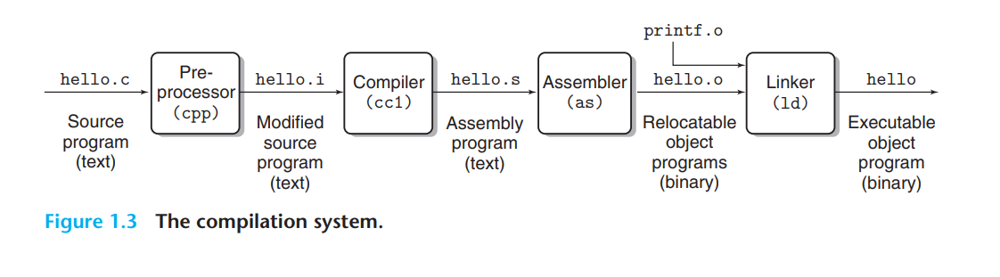
系统的硬件组成¶
- 总线（Buses）：贯穿整个系统的一组电子管道，负责在各个组件之间传递给定大小的字节块（也称 Word）。Word 的大小是系统的基本参数，一般有 4 字节（32 位）或 8 字节（64 位）两种；
- I/O 设备：系统与外部世界连接的桥梁。下图中的 I/O 设备包括用于用户输入的键盘和鼠标、用于展示的用户输出以及用于长期存储数据和程序的磁盘驱动，每个 I/O 设备都通过控制器（Controller）或适配器（Adapter）与 I/O 总线相连。其中，控制器是设备自身或系统主板（Motherboard）上的芯片组，而适配器则是插在主板插槽上的卡；
- 主存储器（Main Memory）：处理器执行程序时存放程序和数据的临时存储，简称主存。从物理上来说，主存储器是由 动态随机存取存储器（Dynamic Random Access Memory，DRAM）芯片组成的集合。而它在逻辑上则是一个线性的字节数组，每个字节都有其唯一地址；
- CPU（Central Processing Unit ）: 解释或执行主存储器中指令的引擎。
- PC：CPU 的核心是一个大小与 Word 相同的存储设备（或寄存器），它被称为程序计数器（Program Counter，PC）。PC 始终指向主存储器中某条机器语言指令，即内含其地址。CPU 会不断地重复执行 PC 指向的机器指令，并更新 PC 使其指向下一条指令；
- Register File：寄存器文件是一个由一组以 Word 为大小的寄存器组成的小型存储设备，每个寄存器都有其唯一名称；
- ALU： 算术/逻辑单元（Arithmetic/Logic Unit），能够计算新的数据和地址值。
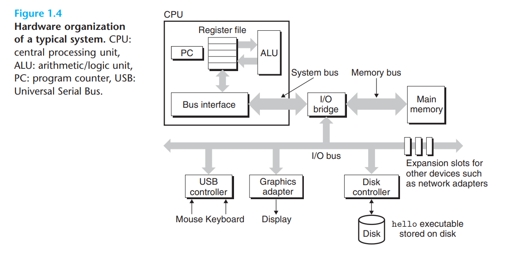
程序的运行过程¶
从键盘上读取命令：当我们在终端中输入命令./hello后，Bash 程序将逐一读取命令字符串到寄存器（Register），然后存储于主存中；
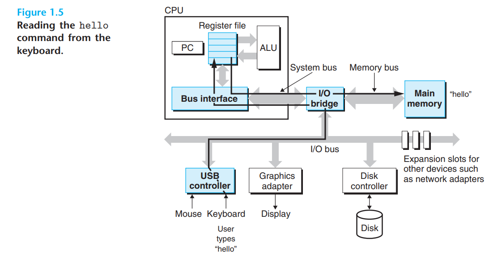
从磁盘加载可执行文件到主存：当我们输入回车键后，Bash 程序得知输入结束，于是开始加载可执行文件hello，其中的代码和数据将通过 直接存储器访问技术（DMA, Direct Memory Access）从磁盘拷贝到主存中；
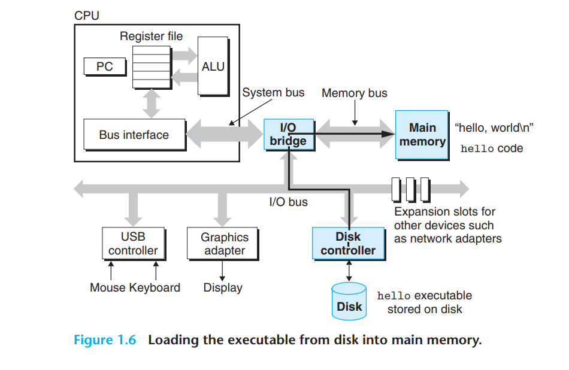
从主存中将结果输出到显示器：处理器执行hello文件中的机器语言指令，然后将hello world\n字符串中的字节从主存拷贝到寄存器文件中，最终传输到用于展示的屏幕上。
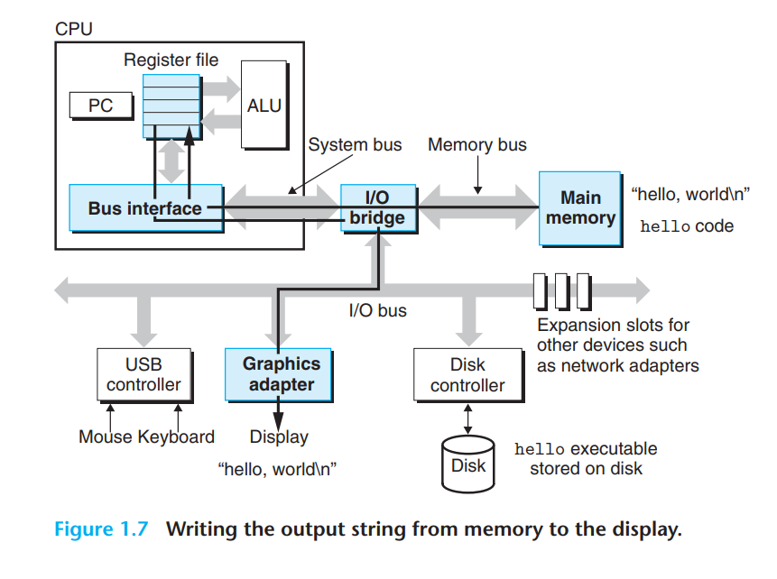
高速缓冲存储¶
在程序运行的过程中，操作系统花费了大量时间将信息从一个地方拷贝另一个地方，CPU 从寄存器文件中读取数据要比从主存储器中读取快近百倍。因此系统设计者引入了一种更小、更快的存储设备，即高速缓冲存储（Cache Memories 或 Caches），它会暂存 CPU 在短期内需要用到的数据。
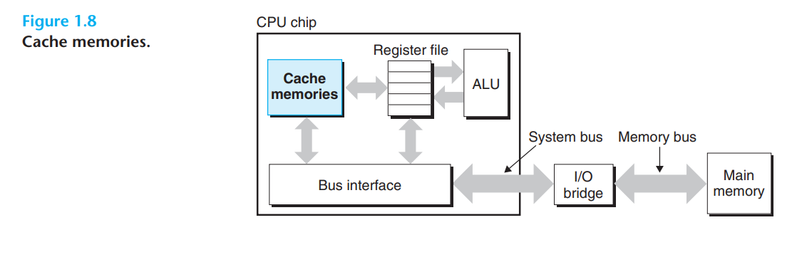
L1 级别的 Caches 位于 CPU 芯片之上，容量为上万字节并且拥有和寄存器文件相当的访问速度。而 L2 级别的 Caches 则通过一条特殊总线连接到 CPU，容量可达十万到百万字节。虽然其访问速度比 L1 Cache 慢五倍左右，但依然比主存储器要快五到十倍。在某些先进的操作系统中，还会使用 L3 级别的 Cache，它们均是通过 静态随机存取存储器（SRAM, Static Random Access Memory）实现的。
计算机系统中的存储器层级结构如下图所示，低层次的存储设备作为相邻高层次设备的缓存：
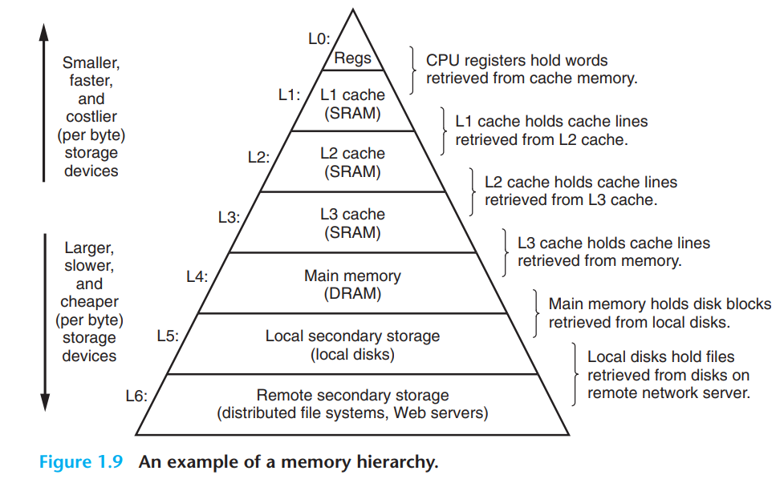
操作系统对硬件的管理¶
操作系统是应用程序和硬件的中间层，应用程序对硬件的所有操作必须通过操作系统实现。
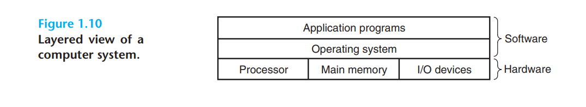
操作系统有两个主要功能：防止硬件被失控的应用程序所滥用；为应用程序提供一种简单而统一的机制来处理复杂且通常差异很大的低级硬件设备。上述两种功能是通过下图中的几个基本抽象实现的：
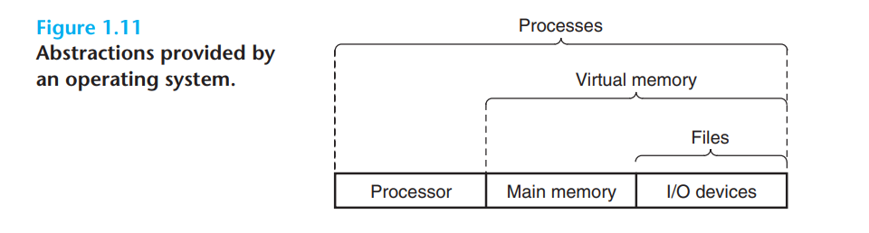
文件（Files）是对 I/O 设备的抽象，虚拟内存 (Virtual Memory) 是对主存储器和 I/O 设备的抽象，而进程（Processes）则是对处理器，主存储器和 I/O 设备的抽象。
进程¶
进程是操作系统对正在运行的程序的抽象，它让我们的hello程序看起来像是系统中唯一运行的程序。多个进程可以并发地在同一个系统中运行，同时每个进程都好像在独占硬件的使用权。而实际上不同进程中的指令是交错执行的，基于下图中的上下文切换：
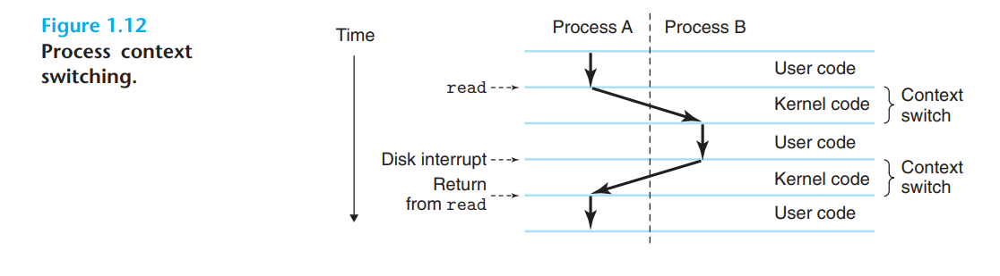
操作系统会跟踪进程运行所需的所有状态信息，即上下文，它包括了程序计数器 PC 的当前值，寄存器文件和主存储器的内容之类的信息。 在任何时间点，单处理器系统只能为单个进程执行代码。 当操作系统决定将控制权从当前进程转移到某个新进程时，它需要首先保存当前进程的上下文，然后还原新进程的上下文，最后将控制权传递给新进程以完成上下文切换。
进程间的转换是由操作系统内核（Kernel）管理的。内核并不是一个单独的进程，而是操作系统代码的一部分，始终存在于内存中。当一个应用程序需要操作系统完成一些操作，比如读写文件时，它便会执行一个特殊的系统调用指令，然后将控制权移交给内核。内核负责实现程序需要进行的操作，并将结果返回给程序。
线程¶
每个进程可以由多个执行单元（线程）组成。由于每个线程都运行在进程的上下文中，且不同线程之间可以共享进程内的代码和全局数据，因此线程要比进程更加高效。
虚拟内存¶
虚拟内存让每个进程都看似独占了主存储器的使用权。所有进程的内存空间结构均相同，它被称为虚拟地址空间（Virtual Address Space），其组成如下：
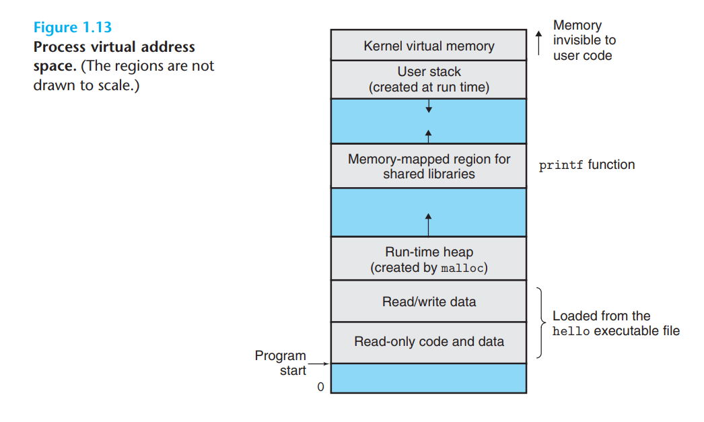
- 程序代码和数据：所有进程的代码都始于相同的固定地址，随后则是与全局变量相关的数据区。它们的大小在进程开始运行时固定；
- 堆（Heap）：调用
malloc或free这样的 C 标准库函数的结果，其大小可以在程序运行时动态扩缩容； - 共享库（Share Libraries）：存放如 C 标准库、数学库这样的共享库的代码和数据的区域；
- 栈（Stack）：编译器实现函数调用的区域，其大小同样可以在运行时动态扩缩容。如果我们调用一个函数，栈就会增长。而每当一个函数返回时，栈便会缩小；
- 内核虚拟内存：为内核预留的内存空间。
文件¶
文件是由字节组成的序列，因此所有的 I/O 设备（包括网络）都可以被看作文件。系统中的所有输入和输出都可以通过 Unix I/O（一组系统调用）对文件进行读写来实现。
多处理器系统¶
由单一操作系统内核控制的多个处理器可以共同组成一个多处理器系统（Multiprocessor System），它基于多核（Multi-core）处理器以及超线程技术（Hyperthreading）。
多核处理器¶
多核处理器将多个 CPU 集成到单个集成电路芯片中，每个 CPU 都被称为一个核（Cores）。下图展示了一个典型的多核处理器的架构。其中 L1 级别的 Cache 被分成了两部分，分别存储短期内需要使用的指令（下图中的“i-cache”）和数据（下图中的“d-cache”）：
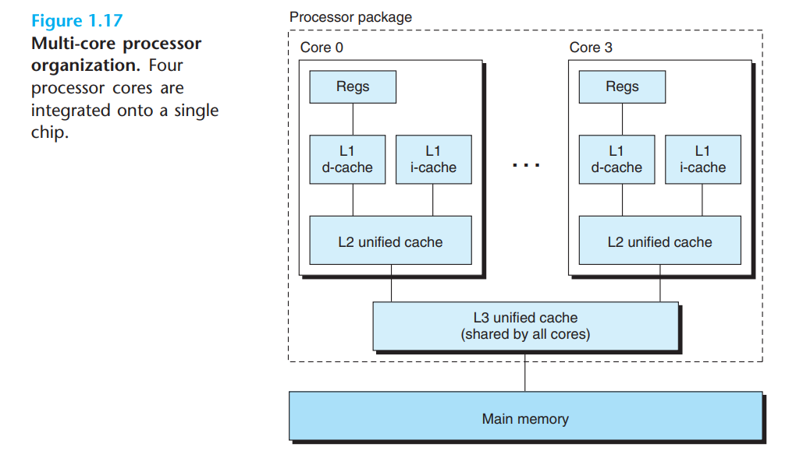
超线程技术¶
超线程技术允许单个 CPU 执行多个控制流，有时也被称为同步多线程（Simultaneous Multi-threading）。通过对 CPU 中的程序计数器、寄存器文件等硬件资源进行拷贝，将一个物理 CPU 虚拟为多个逻辑 CPU，从而实现多个线程的并行计算。常规的 CPU 需要大约两万个时钟周期（Clock Cycle）完成不同线程间的切换，而超线程的 CPU 可以在单个时钟周期内决定要执行哪一个线程，这使得 CPU 能够更好地利用它的执行资源。比如一个逻辑 CPU 执行的线程需要等待数据加载到 Cache 中，那么另一个逻辑 CPU 就可以向其借用执行资源继续执行其他线程。
与使用多个物理 CPU 的传统多处理器系统不同，超线程内核中的逻辑 CPU 共享执行资源。因此当两个线程同时需要某个执行资源时，其中一个线程必须让出资源暂时挂起，直到这些资源空闲后才能继续执行。